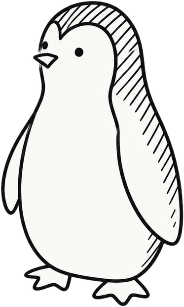
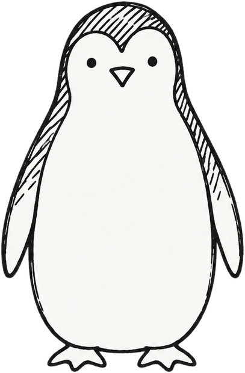

Un lab, una contribución y un informe. Ninguno es experiencia laboral, y no hace falta venderlo así: lo que valen es que otra persona los puede revisar.


Una API de práctica: Gollum pide el Anillo, que es de Frodo. Antes pasaba (200); con la comprobación de dueño, deja de pasar (403).
límite: solo probé lecturaPodman #28637: reintentos en manifest push, con tests y docs. Revisado e integrado por un mantenedor.
no es pentesting, y está bienHallazgo, evidencia, alcance, decisión, verificación y límite. Todo en una página, del mismo lab.
la última fila es la que más dicetocá una carta para darla vuelta ↻
Gollum y Frodo son usuarios ficticios de una API de práctica. Cada uno pide documentos, antes y después de agregar la comprobación de dueño.
README.md → objetivopruebaarreglolímite
acá hay dragones
(y endpoints sin probar) · tocá la niebla
--retry y --retry-delayGET /docs/2 (de Frodo) responde 200 con el Anillo./docs/<id> en un entorno local.200 y el cruzado da 403.↑ la fila que más dice
Solo tareas reales y lo que se puede compartir.
Problema: fallaba sin reintentar · Acción: la opción nueva, con tests y docs · Resultado: revisado e integrado · link
Problema: se leían documentos ajenos cambiando el ID · Acción: comprobar el dueño en cada lectura · Resultado: de 200 a 403 · Límite: solo lectura · link
(y con link)